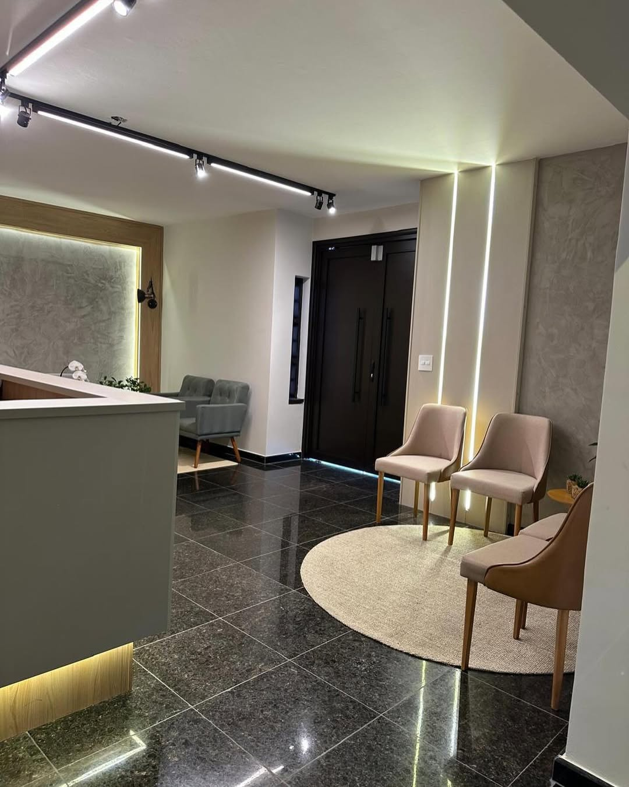
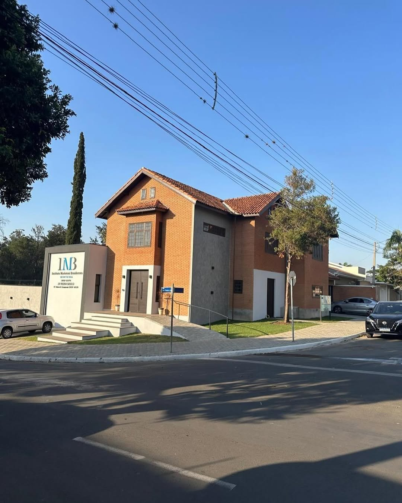
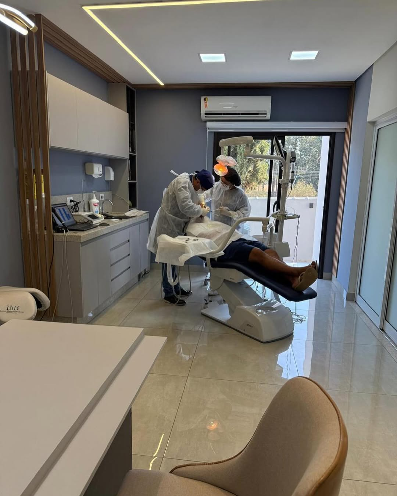
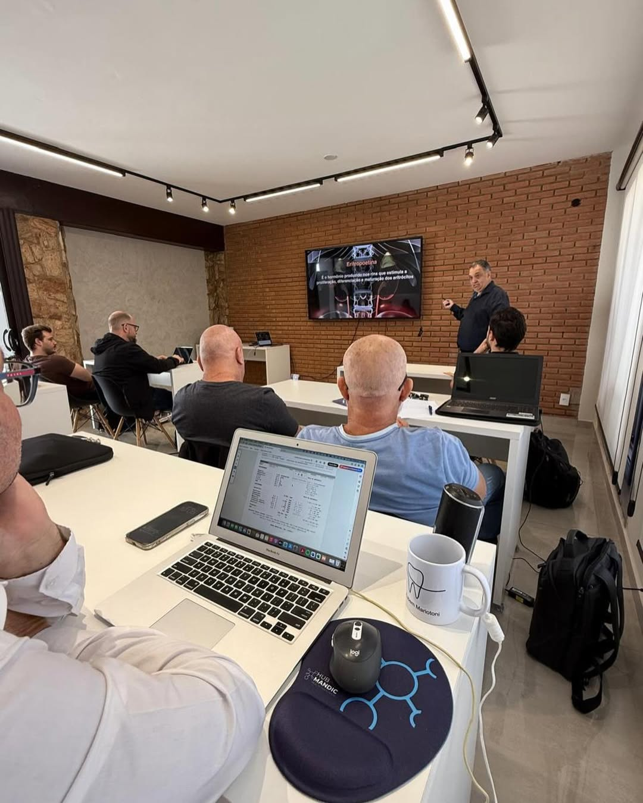
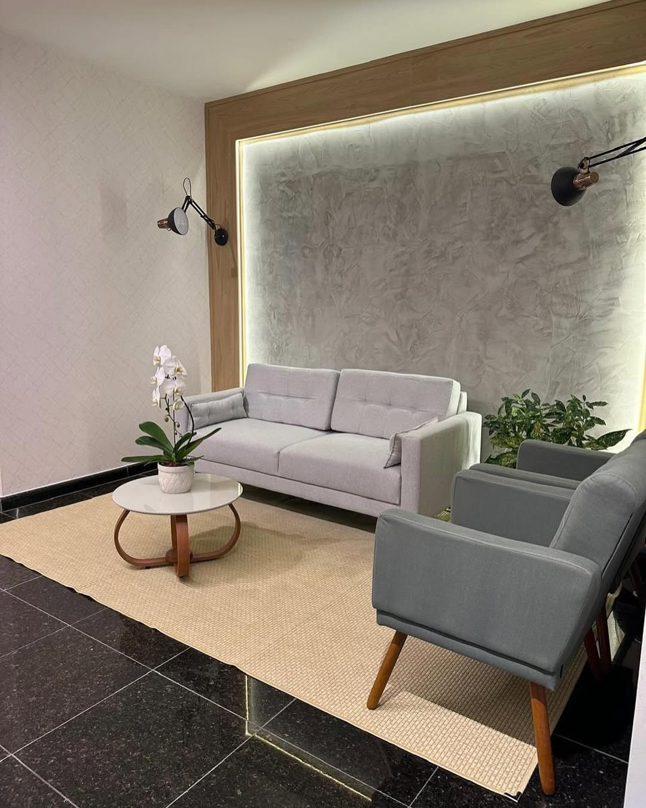
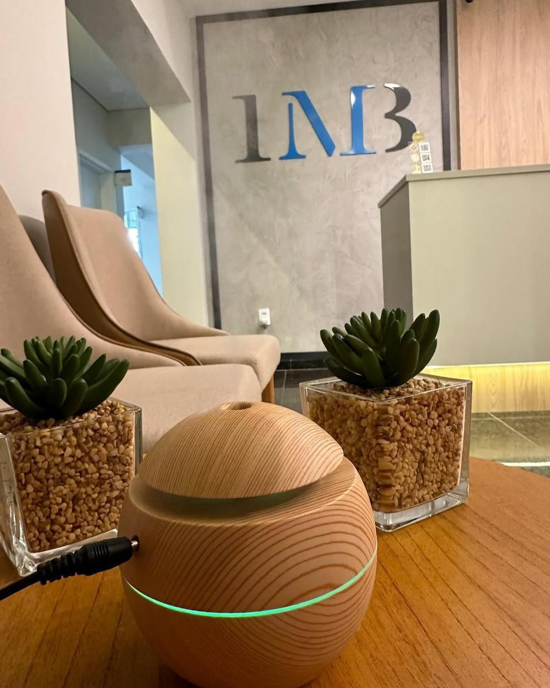

Estética dental
Planejamento para clareamento, resinas, facetas e harmonização do sorriso com naturalidade.

Instituto Mariotoni Brunheroto
Uma clínica em Holambra com ambientes modernos, atendimento humanizado e estrutura para consultas, procedimentos e cursos de atualização profissional.
A IMB combina prática clínica, atualização profissional e uma comunicação clara para que cada paciente participe das decisões com segurança. A estrutura real da clínica reforça essa proposta: recepção confortável, consultórios bem equipados, acessibilidade e ambientes preparados para cursos.





Planejamento para clareamento, resinas, facetas e harmonização do sorriso com naturalidade.
Recuperação de dentes perdidos com atenção à mastigação, estabilidade e estética final.
Correção do posicionamento dos dentes com recursos digitais e acompanhamento individual.
Consultas de rotina, limpeza, restaurações e cuidado contínuo para evitar problemas maiores.
Atenção à gengiva e aos tecidos de suporte para manter o sorriso saudável de forma integral.
Encontros e atualização para profissionais em uma sala preparada para educação continuada.
A IMB mostra na prática essa dupla vocação: consultórios para atendimento odontológico e uma sala de aula com estrutura para cursos. Esse olhar de instituto valoriza diagnóstico, documentação, planejamento e atualização constante.
Acompanhe casos, orientações, eventos e a rotina da equipe no perfil oficial da IMB.
Uma experiência odontológica com a leveza de Holambra e o rigor técnico de um instituto.
Atendimento em Holambra, SP. Para confirmar horários, endereço e disponibilidade, fale diretamente com a equipe pelo perfil oficial.
CidadeHolambra, SP
Perfil@imb.odontologia
EstruturaClínica e cursos
Confirme horários, endereço e procedimentos disponíveis diretamente com a equipe antes da visita.